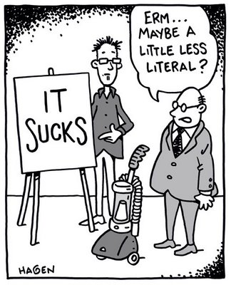
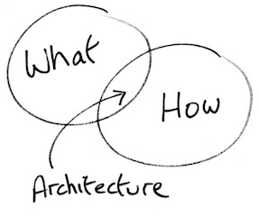
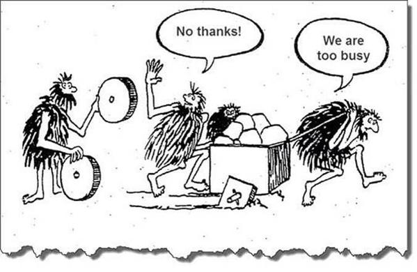
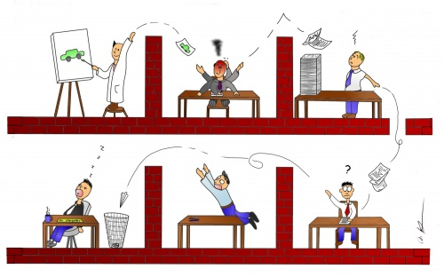
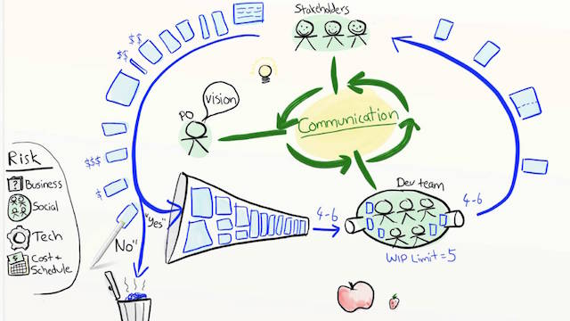
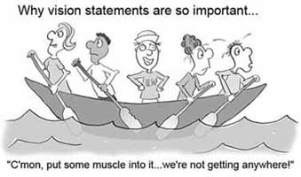

sometimes
Focus on:
Promotes:





Email: chris.howejones@gmail.com
chris.howejones@gmail.com
Twitter: @agile_geek
@agile_geek
Github: github.com/chrishowejones
github.com/chrishowejones
Presentation: github.com/chrishowejones/presentations
github.com/chrishowejones/presentations
Blog: chrishowejones.wordpress.com
chrishowejones.wordpress.com